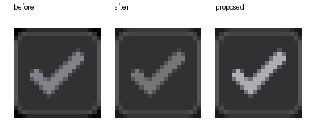

Historical family analysis. The current revision's asset and reference evidence is in icon-reference-validation.json and revision-2026-11-25.html. This file is retained for the checkmark-family disposition.
Generated: 2026-11-24T19:44:58.625312+00:00
Scope: checkmark family only. Baseline before 29b0a0b..., MR !16166 head fe4adb4.... Full 194-asset reconciliation is pending; 181 assets outside this family are not classified here.
| Original SVG (theme-relative) | Disposition | Replacement / mapping | Confidence | Source evidence |
|---|---|---|---|---|
images/icons/002e9a/checkmark.svg |
Confirmed unused and removed | — |
medium-high | No exact-path, basename-resolved or dynamic reference in core before; only unrelated action-link/82828c basename hits. Absence is evidence, not proof of non-use. No reference to this exact colour-directory path exists in Drupal core at the before revision. The only core basename references point to action-link/checkmark.svg and 82828c/checkmark.svg, not to this variant. No dynamic construction of images/icons/ |
images/icons/0036b1/checkmark.svg |
Confirmed unused and removed | — |
medium-high | No exact-path, basename-resolved or dynamic reference in core before; only unrelated action-link/82828c basename hits. Absence is evidence, not proof of non-use. No reference to this exact colour-directory path exists in Drupal core at the before revision. The only core basename references point to action-link/checkmark.svg and 82828c/checkmark.svg, not to this variant. No dynamic construction of images/icons/ |
images/icons/42a877/checkmark.svg |
Confirmed unused and removed | — |
medium-high | No exact-path, basename-resolved or dynamic reference in core before; only unrelated action-link/82828c basename hits. Absence is evidence, not proof of non-use. No reference to this exact colour-directory path exists in Drupal core at the before revision. The only core basename references point to action-link/checkmark.svg and 82828c/checkmark.svg, not to this variant. No dynamic construction of images/icons/ |
images/icons/545560/checkmark.svg |
Confirmed unused and removed | — |
medium-high | No exact-path, basename-resolved or dynamic reference in core before; only unrelated action-link/82828c basename hits. Absence is evidence, not proof of non-use. No reference to this exact colour-directory path exists in Drupal core at the before revision. The only core basename references point to action-link/checkmark.svg and 82828c/checkmark.svg, not to this variant. No dynamic construction of images/icons/ |
images/icons/ab1b1b/checkmark.svg |
Confirmed unused and removed | — |
medium-high | No exact-path, basename-resolved or dynamic reference in core before; only unrelated action-link/82828c basename hits. Absence is evidence, not proof of non-use. No reference to this exact colour-directory path exists in Drupal core at the before revision. The only core basename references point to action-link/checkmark.svg and 82828c/checkmark.svg, not to this variant. No dynamic construction of images/icons/ |
images/icons/c11f1f/checkmark.svg |
Confirmed unused and removed | — |
medium-high | No exact-path, basename-resolved or dynamic reference in core before; only unrelated action-link/82828c basename hits. Absence is evidence, not proof of non-use. No reference to this exact colour-directory path exists in Drupal core at the before revision. The only core basename references point to action-link/checkmark.svg and 82828c/checkmark.svg, not to this variant. No dynamic construction of images/icons/ |
images/icons/d72222/checkmark.svg |
Confirmed unused and removed | — |
medium-high | No exact-path, basename-resolved or dynamic reference in core before; only unrelated action-link/82828c basename hits. Absence is evidence, not proof of non-use. No reference to this exact colour-directory path exists in Drupal core at the before revision. The only core basename references point to action-link/checkmark.svg and 82828c/checkmark.svg, not to this variant. No dynamic construction of images/icons/ |
images/icons/ffffff/checkmark.svg |
Confirmed unused and removed | — |
medium-high | No exact-path, basename-resolved or dynamic reference in core before; only unrelated action-link/82828c basename hits. Absence is evidence, not proof of non-use. No reference to this exact colour-directory path exists in Drupal core at the before revision. The only core basename references point to action-link/checkmark.svg and 82828c/checkmark.svg, not to this variant. No dynamic construction of images/icons/ |
images/icons/82828c/checkmark.svg |
Replaced by differently named SVG | images/icons/pretint/check-disabled.svg |
high | css/components/form--checkbox-radio.pcss.css:223; css/components/form--checkbox-radio.css:230. Disabled checked checkbox icon. The old 16x16 hard-coded #82828c check was replaced by images/icons/pretint/check-disabled.svg, derived from check.svg with #767676. Geometry changed to the canonical 24x24 check glyph. |
images/icons/ffffff/checkmark-sm.svg |
Replaced by differently named SVG | images/icons/pretint/check-inverse.svg |
high | css/components/form--checkbox-radio.pcss.css:144; css/components/form--checkbox-radio.css:151. Checked checkbox icon in light mode. The old 16x16 white check was replaced by images/icons/pretint/check-inverse.svg, derived from check.svg with #ffffff. Geometry changed to the canonical 24x24 check glyph. |
migration/media/icons/action-link/checkmark.svg |
Replaced by differently named SVG | images/icons/check.svg |
high | css/base/icons.pcss.css:11; css/components/action-link.pcss.css:187; css/base/icons.css:17; css/components/action-link.css:197. Action-link checkmark icon (--admin-icon-checkmark). The old stroked polyline check was replaced by the canonical filled check.svg. This is an intentional icon-family redesign: the check remains monochrome, non-directional and mask-rendered, but its stroke/fill construction changes. |
migration/media/icons/form/checked.svg |
Relocated without modification | images/icons/check.svg |
high | css/base/icons.pcss.css:10; css/components/form--checkbox-radio.pcss.css:148; css/components/form--checkbox-toggle.pcss.css:111; css/base/icons.css:16; css/components/form--checkbox-radio.css:155; css/components/form--checkbox-toggle.css:118. Exact hash match with images/icons/check.svg. The same file content moved from the migration staging tree to the public icon registry and now backs --admin-icon-check, --admin-icon-checked and --admin-icon-checkmark. |
migration/media/icons/form/toggle-unchecked.svg |
Relocated without modification | images/icons/toggle-unchecked.svg |
high | css/base/icons.pcss.css:57; css/components/form--checkbox-toggle.pcss.css:149; css/base/icons.css:63; css/components/form--checkbox-toggle.css:156; css/base/icons.css:74; css/components/form--checkbox-toggle.css:156. Exact hash match with images/icons/toggle-unchecked.svg. |
| After SVG (theme-relative) | Role | Derived from | Fill | References |
|---|---|---|---|---|
images/icons/check.svg |
Canonical monochrome check master | — | currentColor | css/base/icons.pcss.css:19; css/base/icons.pcss.css:20; css/base/icons.pcss.css:21; css/base/icons.css:25; css/base/icons.css:26; css/base/icons.css:27 |
images/icons/pretint/check-inverse.svg |
Pretinted checked checkbox (light) | images/icons/check.svg | #ffffff | css/base/icons.pcss.css:101; css/components/form--checkbox-radio.pcss.css:144; css/base/icons.css:107; css/components/form--checkbox-radio.css:151 |
images/icons/pretint/check-disabled.svg |
Pretinted disabled checked checkbox (light) | images/icons/check.svg | #767676 | css/base/icons.pcss.css:102; css/components/form--checkbox-radio.pcss.css:225; css/base/icons.css:108; css/components/form--checkbox-radio.css:232 |
images/icons/toggle-unchecked.svg |
Toggle unchecked master | — | currentColor | css/base/icons.pcss.css:68 |
images/icons/82828c/checkmark.svg was the only used colour variant. MR !16166 replaced its disabled-checked checkbox image with pretint/check-disabled.svg (#767676) but did not add a dark-mode variant. On the dark disabled surface (#313134) the rendered check contrast drops from 3.41:1 to 2.85:1. This was reproduced in the live Drupal 12 lab at /admin/people/permissions, where the Administrator column renders 91 checked and disabled checkboxes. Light mode improves from 3.16:1 to 3.78:1. Disabled controls are exempt from WCAG 2.2 SC 1.4.11, but the checked state became harder to distinguish and the regression is measurable and easy to prevent.
Proposed fix: add images/icons/pretint/check-disabled-inverse.svg (#adaeb3, the gray-400 token used for disabled foreground), register it as --admin-icon-checked-disabled-inverse, and use it only under .dark-mode. Measured rendered contrast becomes 5.85:1. Geometry is unchanged from check.svg; light mode and forced-colours output are unchanged.

images/icons/pretint/check-disabled-inverse.svg — Add pretinted disabled check for dark mode. MR head uses #767676 on the dark disabled surface (#313134), 2.85:1. The new value is 5.85:1 and matches the disabled foreground token. Geometry is unchanged from check.svg.css/base/icons.pcss.css (+ compiled icons.css) — Register --admin-icon-checked-disabled-inverse. Theme registry consistency; generated CSS data URI verified to match the source SVG.css/components/form--checkbox-radio.pcss.css (+ compiled .css) — Use the new pretint only in .dark-mode for checked+disabled checkboxes. Keeps light-mode output unchanged while restoring >=3:1 in dark mode.proposed/tests/checkmark_regression.py — Add static regression checks. Covers asset validity, token registration, compiled/source parity, dark rule, and contrast.https://repro-baseline-main.ddev.site/admin/people/permissions, core d29add7e) was tested with the MR checkmark files/CSS applied surgically to the baseline theme; the full MR theme was not installed. The baseline theme was restored exactly afterwards.git --git-dir=drupal.git grep -n -F 'images/icons/<colour>/checkmark.svg' before -- core
git --git-dir=drupal.git grep -n -F 'checkmark.svg' before -- core
git --git-dir=drupal.git grep -n -F 'check-disabled' after -- core/themes/default_admin
python3 proposed/tests/checkmark_regression.py